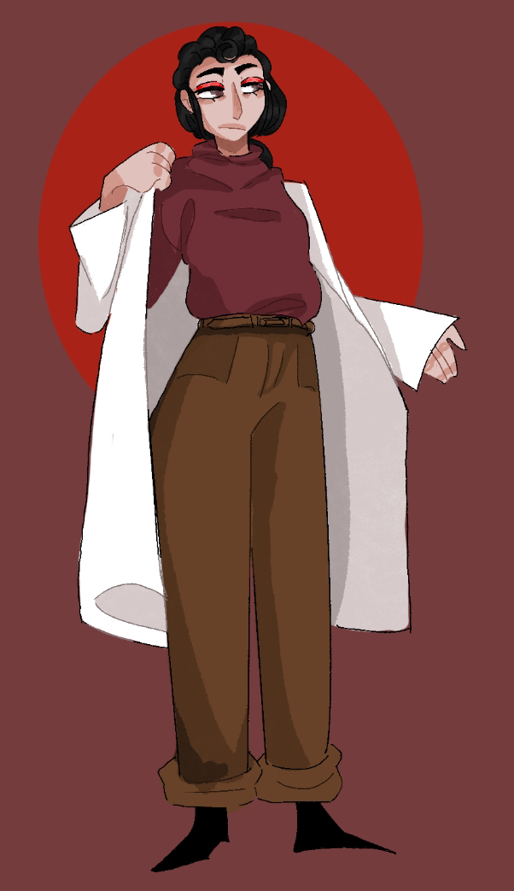

Ylena Devall

- Name: Ylena Devall
- Age: 40
- Birthday: October 17, 2451
- Height: 5'8"
- Ylena was born to her parents, Nadia and Zeke Devall, on Earth. She spent her formative years just outside a large city in what used to be Eastern Europe. She joined the Arcturus after recovering
from a serious injury that required her to replace her left arm and lung with cybernetics. Now having
to cope with the fact that she will most likely never be able to return to her old life.
"I'm getting too old for this."
Art by DewieDuck